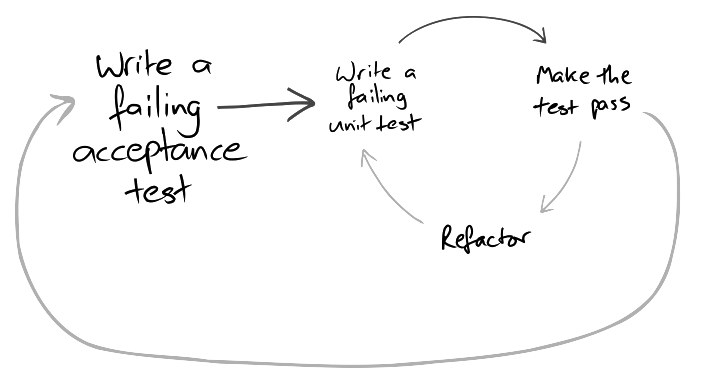

PTD
Pucela Testing Days

Ciclo completo.
De
cabo
a
rabo
@Test
Los desarrolladores pueden implementar un flujo completo desde la captura de requisitos a la aceptación de usuario siempre guiados por tests
Gustavo
Quiero monitorizar la temperatura de la cubeta
Heisenberg
¿Podrías por favor darme algún detalle más?
Gustavo
Quiero que si la cubeta está a 30º una página me diga que está a 30º. Quiero ver una gráfica con la media de los últimos 7 días. Ah, y estaría bien que si la temperatura actual es superior a la media de los últimos 7 días, la temperatura salga en rojo.
mvn archetype:generate -DarchetypeArtifactId=jboss-javaee6-webapp -DarchetypeGroupId=org.jboss.spec.archetypes -DgroupId=com.juanignaciosl.ptd.fullpicture -DartifactId=ptd-full-picture -DinteractiveMode=false
... e importar en Eclipse y lanzar en JBoss 7
- 000-base
- Proyecto base
ATDD
Mis objetivos*
- Comunicarme con el usuario
- Documentar el sistema
- Verificar funcionamiento
*: si no te gustan, tengo otros
Concordion + Selenium
www.concordion.org
- Centrado en la legibilidad para usuario final
- Especificación en HTML
- Simple
www.seleniumhq.org
- Headless browser
- Ampliamente
odiadoutilizado
- 010-acceptance-spec
-
Especificación de la aceptación:
- Especificación y fixture
- Page object
I. Especificación y fixture
Especificación, separando requisito de implementación
- 020-bucket-temperature-simulator
- Implementación de un mock de la cubeta
- 030-week-temperature-spec
- Especificación de la temperatura semanal
// TODO: pasos siguientes
- Calcular media de temperaturas almacenadas
- Mostrar 7 medias de días previos
Persistencia -> Test de Integración
Arquillian
- Despliega el test en el servidor
- Real
- Lento
- 040-temperature
(Database) Fixtures
TestDataBuilders
- Mantenibles
- Escalables (cantidad y variabilidad)
- 050-temperature-average
- 060-week-temperature
- 070-temperature-alarm
Resumen
- Requisitos en especificación ejecutable
- Aceptación end-to-end
- Patrones fixture y page object para especificación mantenible
- Test de integración para pruebas contra bbdd
- TestDatBuilder para datos de prueba mantenibles